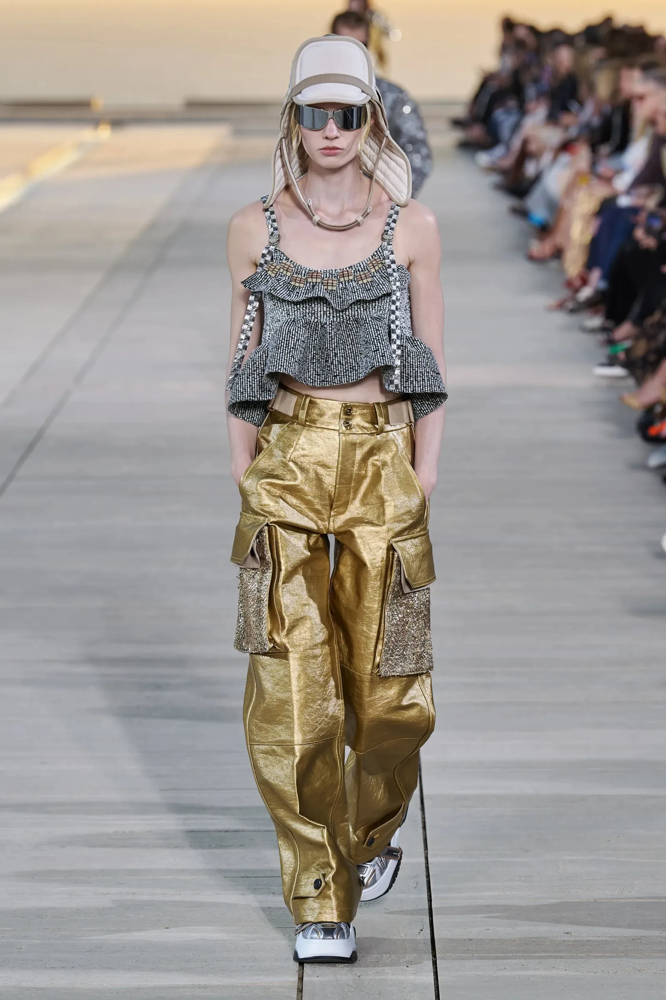
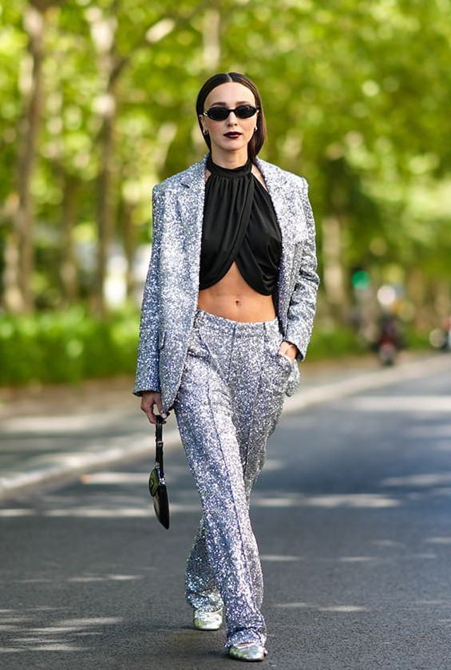
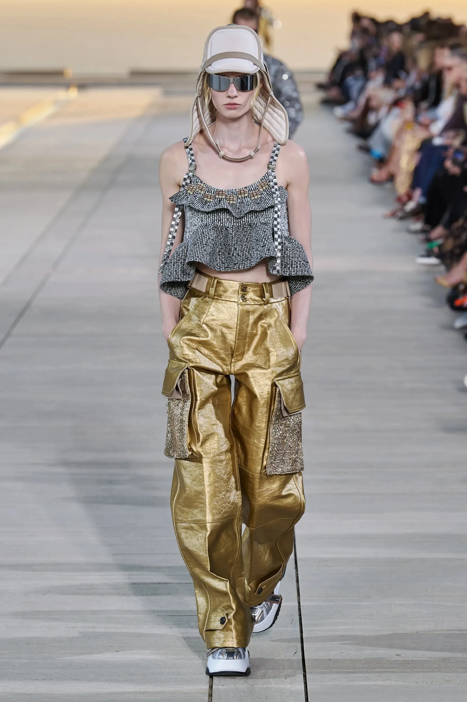
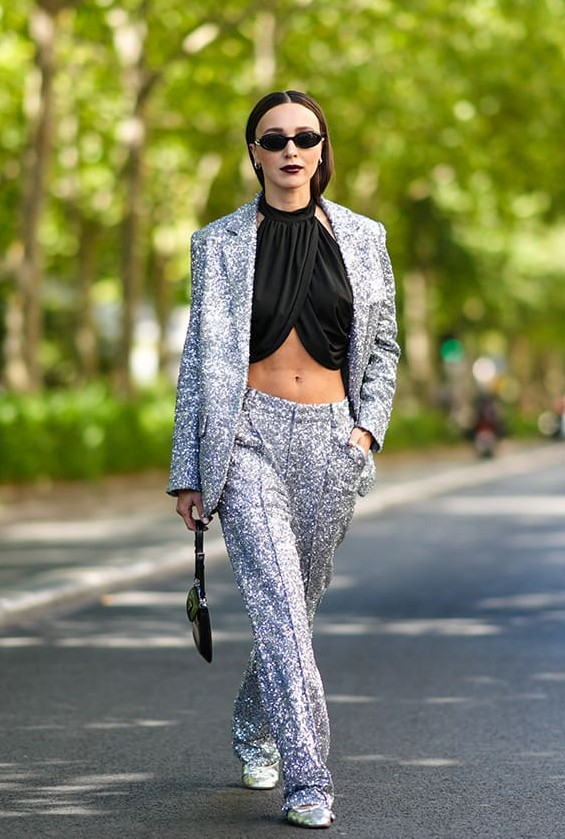
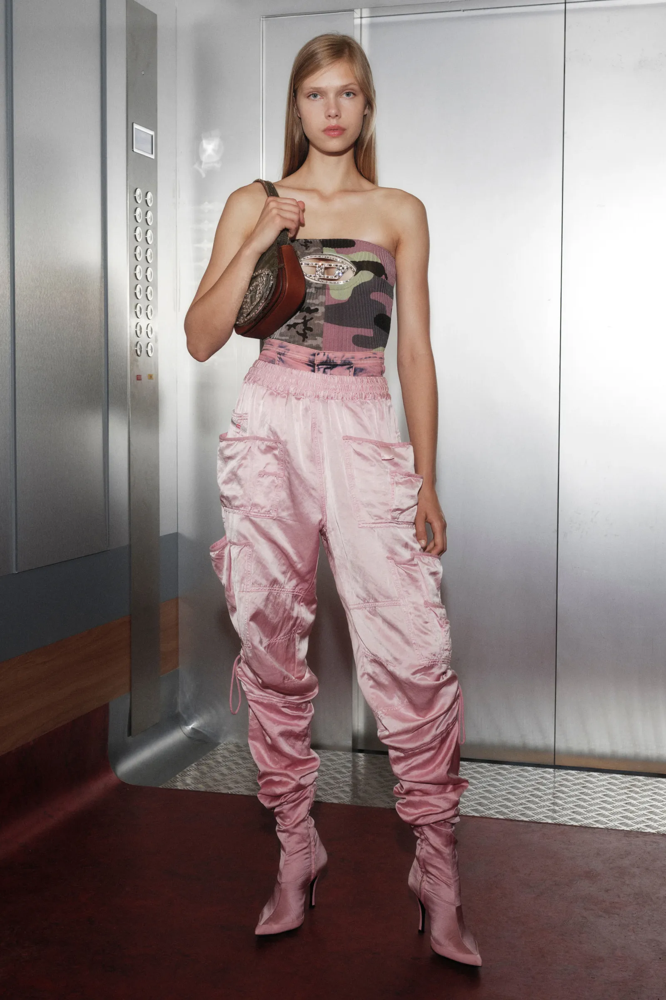
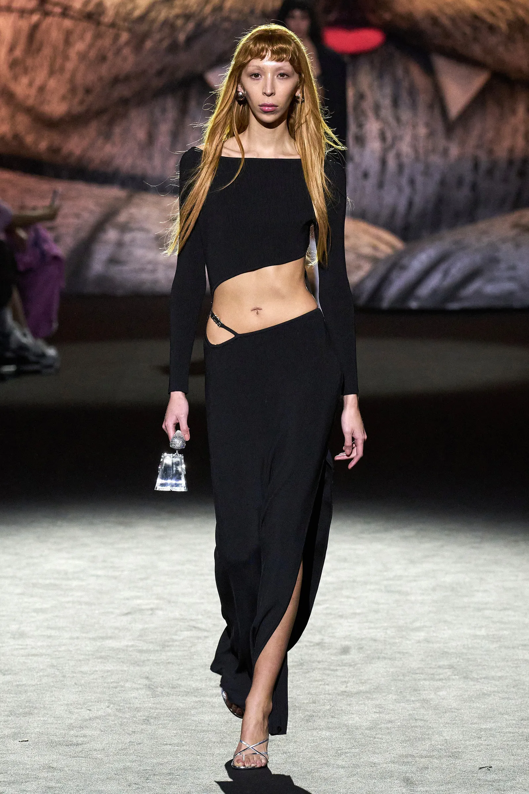
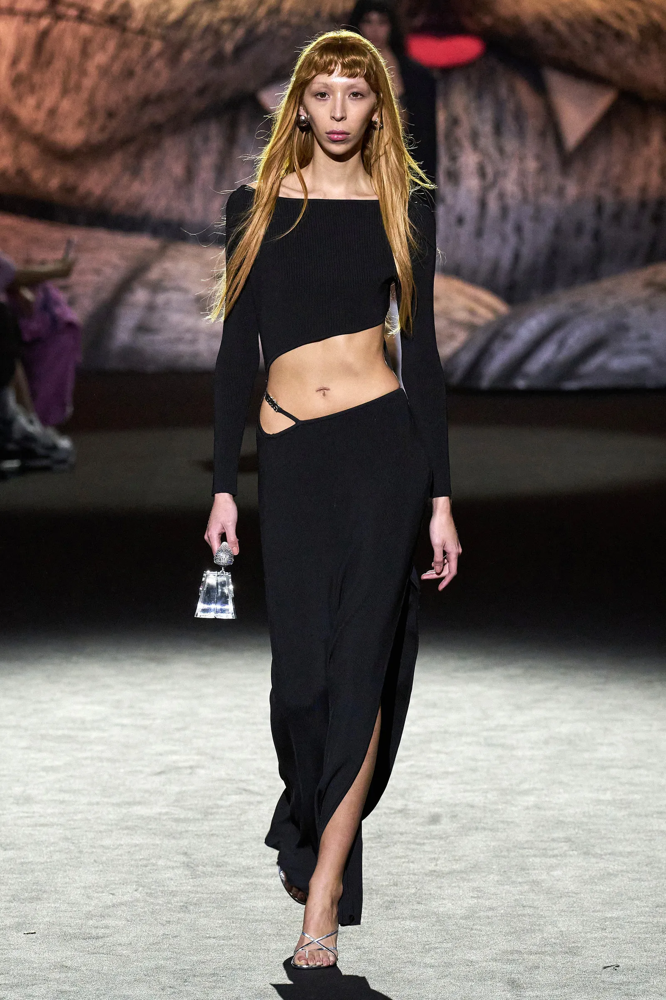
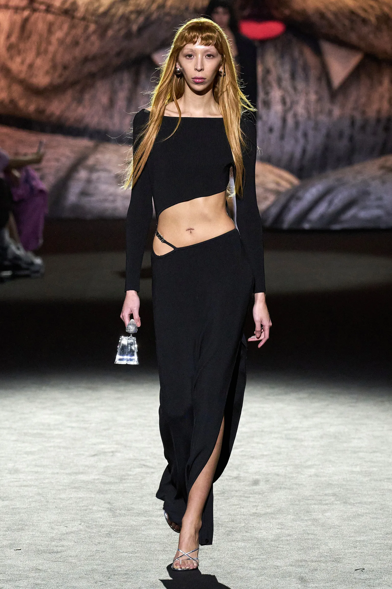

Existen ciertas estéticas, colores y patrones que prometen estar por todas partes: a grandes rasgos, nos depara un año con algunas tendencias en las antípodas. Veremos el triunfo de lo más discreto, pero también de lo más llamativo. A fin de cuentas, ¿quién se atreve con ese look que parece desterrar los pantalones y faldas? En siluetas, 2023 aboga por la figura tradicional, sin dejar de lado ciertas superposiciones oversize. Recopilamos listas con diferentes prendas y accesorios para que puedas ajustarlas a tu propio estilo y ademas las tendencias que consideramos que son las mas polemicas pero a la vez mas llamativas de este año.
- Pantalones a la cadera
- Vestidos de lentejuelas
- Pantalones cargo
- Vestidos y prendas con transparencias
- Lencería a la vista
- Blusas, faldas y vestidos en colores pastel
- Traje sastre
- Transparencias por doquier
- Faldas y vestidos de flecos
- Leggings en animal print
- Blusas y vestidos de estampado floral
Prendas metalicas brillantes
la excentricidad se verá reflejado en las piezas metálicas. Este año, el dorado y el plateado transitarán entre estaciones, en un abrir y cerrar de ojo. Aun asi, esta tendencia nunca se ha dejado de ver, sin embargo este año se veran reflajadas en todas las colecciones.
 



Los 2000 en el 2023 como protagonista
Con el regreso de la moda del 2000 vemos que es ciclico. Vemos la vuelta de los pantalones bumster, una propuesta del tiro más bajo posible para un pantalón, de Alexander McQueen en su primera colección luego de graduarse de la escuela, vuelve a tener resonancia. La moda Y2K se lleva también en las transparencias, en los crop tops con jeans holgaos y en los minibolsos.

 

